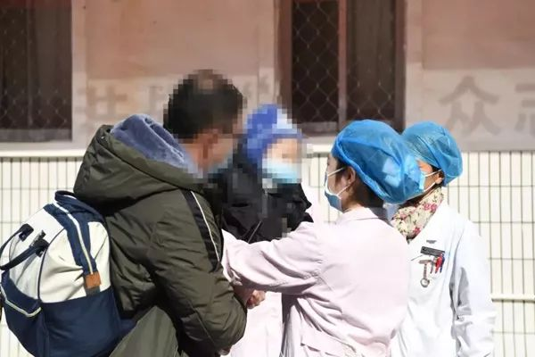
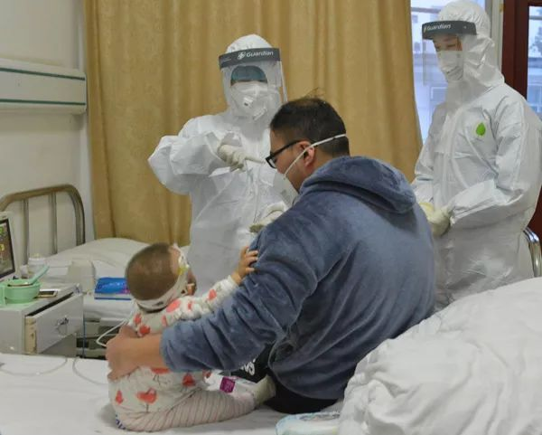
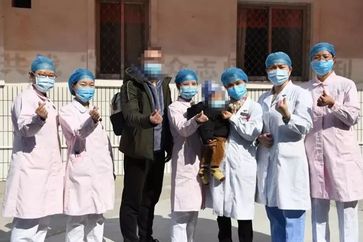

新冠肺炎治愈者：经历生死后，更热爱生活
原文链接 备份链接 澎湃新闻记者 朱莹 钟笑玫 明鹊 实习生 刘昱秀 李振东与病魔斗争了16天后终于治愈出院，他希望自己的经验能给病友提供借鉴。记者：闫海龙 魏凡 编辑：曾怡文 视频来源：澎湃新闻(04:53) 这个冬天，新冠肺炎疾风般席 …
澎湃新闻记者 邓雅菲 实习生 陈紫嘉 通讯员 李毅 樊帅 蒋辉

年仅9个月的小宝在十堰市国药东风总医院治愈出院。 本文图片均来自国药东风总医院
2月11日上午11时，年仅9个月的小宝（化名）在十堰市国药东风总医院治愈出院，这是目前湖北省治愈出院的新冠肺炎患儿中年龄最小的一例。
1月27日，小宝的父亲在十堰国药东风总医院确诊患新冠肺炎，随后小宝也在该院被确诊。
“入院时，患儿除感染新冠病毒外，还合并了肺炎支原体感染、乙流感染，同时还有粒细胞减少，容易合并细菌感染，孩子很容易出现全身多个器官功能的受损，情况非常危急。”国药东风总医院儿科主任陈全景介绍说。
针对小宝的病情，十堰国药东风总医院立刻与北京地坛医院儿科专家共同讨论制定了治疗方案，经过15天的治疗后，小宝各项指标平稳，两次核酸检测均为阴性。
2月11日，小宝父子俩一同出院。他的父亲出院前说，“儿科陈主任、感染科姜主任非常用心，精心治疗，孩子的情况越来越好，现在完全好了，可以回家了，我好开心！”
患儿就诊时出现呼吸困难、缺氧

医院专家商讨制定救治方案。
“因为孩子就诊时出现呼吸急促、呼吸困难、缺氧的情况，再加上年龄小、抵抗力弱，患儿的病情一度十分凶险。”陈全景说。
收治小宝后，该院立即安排儿科医护团队入驻隔离病房，组织全院专家会诊。在治疗过程中，该院联系到北京地坛医院儿科专家对小宝的病情进行分析指导，共同参与制定救治方案。
“针对孩子的情况，我们进行了强力的抗细菌、抗病毒、抗支原体、氧疗治疗，同时给予丙种球蛋白的支持治疗，帮助孩子提升机体抗体，中和毒素，清除病毒。最终患儿的情况开始好转。”陈全景说。

医护人员照顾小宝。
15天治疗后治愈出院
“经过15天的全力救治和精心护理，小宝目前精神状态、吃奶等各方面都很好，呼吸、心率等指标都很平稳。”陈全景说。
据了解，出院前小宝的两次核酸检测均为阴性，肺部CT显示炎症吸收，肝功能、心肌受损也都恢复了，符合出院标准。小宝的父亲也早在2月7日就符合出院标准，两次核酸检测均为阴性。
在出院当天，陈全景详细交待了出院注意事项后，联系医院120救护车送父子二人顺利回家。回家后，他们还需进行为期两周的隔离观察。

医护人员送小宝和他的爸爸。
小宝的父亲对记者说，“医生护士特别辛苦，特别不容易，穿着防护服工作那么久，有时候都快晕倒了，还在坚持照顾我们，真的非常感激。医院的伙食也好，三荤一素一汤。病房还有热水洗澡。儿科陈主任、感染科姜主任非常用心，精心治疗，孩子的情况越来越好，现在完全好了，可以回家了，我好开心！”
2月4日，在国家卫生健康委举办的新闻发布会上，国家医疗专家组成员、北京地坛医院感染性疾病诊疗与研究中心首席专家李兴旺表示，按现在能够拿到的病例数据，最小的报告年龄是一个月的新生儿，最大年龄是90多岁的老年人，所以人群都是普遍易感的。”

治疗小宝的医护人员和父子二人合影。
戳这里进入
“全国新型冠状病毒感染病例实时地图”↓↓↓

本期编辑 周玉华
推荐阅读


原文链接 备份链接 澎湃新闻记者 朱莹 钟笑玫 明鹊 实习生 刘昱秀 李振东与病魔斗争了16天后终于治愈出院，他希望自己的经验能给病友提供借鉴。记者：闫海龙 魏凡 编辑：曾怡文 视频来源：澎湃新闻(04:53) 这个冬天，新冠肺炎疾风般席 …
原文链接 备份链接 本报记者 张家振 武汉报道 “今天核酸检测结果阳性，尘埃落定，终于确诊了。”2月1日上午10时41分，疫情“吹哨人”李文亮对外界宣布了这一消息。李文亮是武汉市中心医院的一名眼科医生，因最早于2019年12月30日向外 …
原文链接 备份链接 武汉市青山区市民 夏女士 澎湃新闻记者 薛莎莎 整理 夏女士家住武汉市青山区，家中七口人：公婆、父母、丈夫、她和三岁大的孩子。此前，澎湃新闻曾报道了她一家七口疑似感染新冠肺炎的故事。 她公婆、丈夫先后查出肺部感染或病 …
原文链接 备份链接 ********** *****2月12日，距离柯亮生下孩子已半个月。**********她仍旧需要与初生的小女儿保持距离，没有哺乳与接触。**********先生和公婆也无法近身照顾她太多，更多的时候，她和家人各自待 …
原文链接 备份链接 经济观察网 记者 瞿依贤 湖北省第三人民医院呼吸内科医生胡晟在除夕这天拿到了自己的CT片子：双肺几乎全白。他科室的同事看到结果，好几个都哭了。 胡晟是在发热门诊被感染的。湖北省第三人民医院在1月8日开设发热门诊，他从呼 …